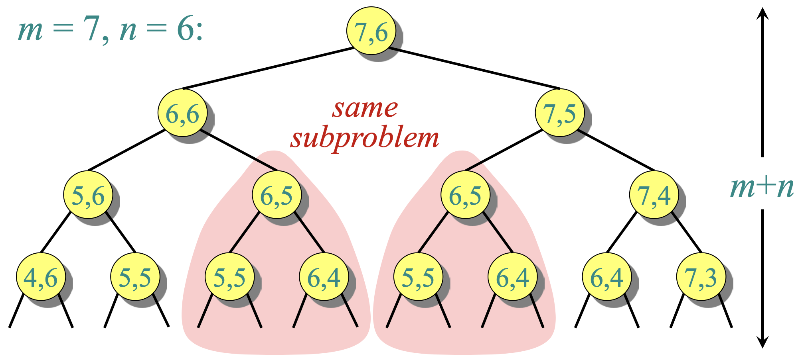
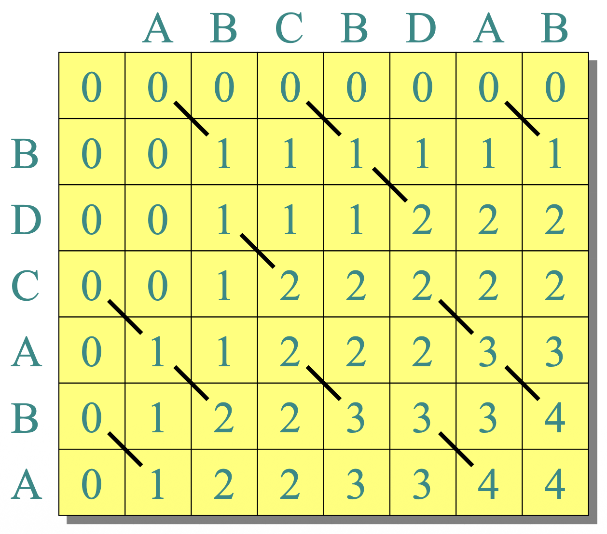
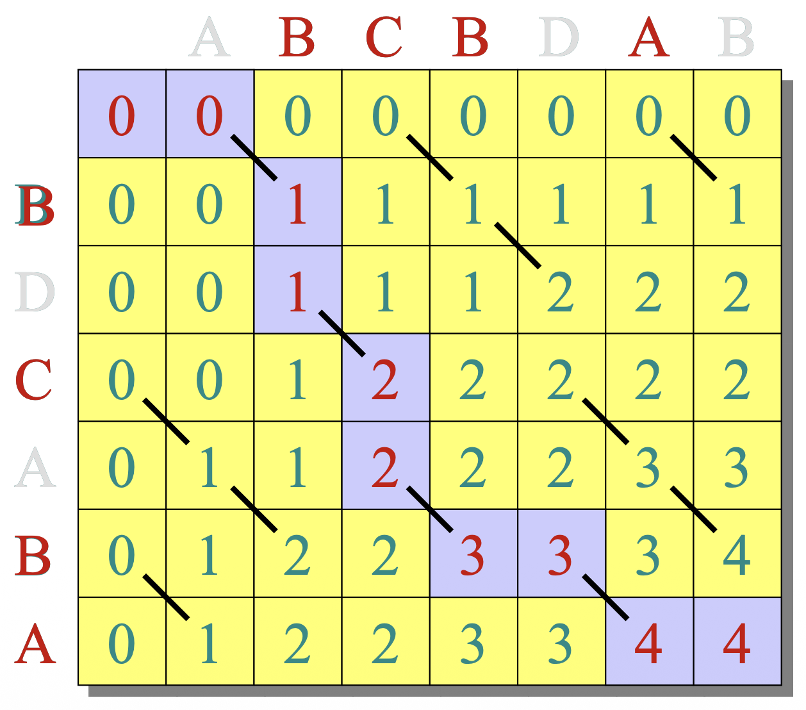

lecture #12
Sequence defined by initial values and a recurrence:
\(a_1=1,\; a_2=1,\; a_n=a_{n-1}+a_{n-2}\).
1, 1, 2, 3, 5, 8, 13, 21, 34, …
Question: How should we compute \( \mathrm{Fib}(n) \)?
Naive idea: Direct translation of the recurrence.
Fib(n)
if n = 1 or n = 2:
return 1
else:
a = Fib(n - 1)
b = Fib(n - 2)
return a + b
Leads to a recurrence for time complexity:
\(T(n) = T(n-1) + T(n-2) + \Theta(1)\).
Claim: \(T(n)\) grows exponentially in \(n\).
Prove that the solution to \(T(n)=T(n-1)+T(n-2)+\Theta(1)\) is exponential in \(n\).
Hint: show \(T(n) \ge 2\,T(n-2) + 1\), then use a recursion tree to derive \(T(n) \in \Omega(2^{n/2})\).
Many subproblems are solved repeatedly. The naïve recursive method only has a linear (\(n-1\)) number of distinct subproblems but recomputes them exponentially many times.
Fib(n)
if n = 1 or n = 2: return 1
f[1] = 1; f[2] = 1
for i = 3 to n:
f[i] = f[i - 1] + f[i - 2]
return f[n]
Some recursive algorithms can be accelerated by exploiting overlapping subproblems and optimal substructure.
Overlapping subproblems means that a recursive solution solves the same subproblems many times.
Dynamic programming fixes this by storing results of subproblems (memoization or tabulation) so each is solved once.
In dynamic programming, optimal substructure means that the optimal solution to a problem can be built from the optimal solutions of its subproblems.
Example: In shortest path problems like Dijkstra's, the shortest path from A to C through B requires that the path from A to B is already the shortest possible.
This property allows recursion to combine subproblem results efficiently - it's what makes dynamic programming possible.
Given two sequences \(x[1..m]\) and \(y[1..n]\), with $m \leq n$, find a longest subsequence common to both.
Note: “a” longest, not “the” longest (may be multiple solutions).
\(x:\) B D C A B A
\(y:\) A B C B D A B
One LCS: BCBA.
Check every subsequence of \(x\) to see if it is a subsequence of \(y\).
Cost: \(2^m\) subsequences; checking each costs \(O(n)\) ⇒ \(O(n\,2^m)\) in the worst case (exponential).
Strategy: operate on prefixes of \(x\) and \(y\).
Let \(c[i,j] = \lvert \mathrm{LCS}(x[1..i],\, y[1..j]) \rvert\). Then the desired length is \(c[m,n]\).
\[ c[i,j] = \begin{cases} c[i-1,j-1] + 1, & \text{if } x[i]=y[j],\\ \max\{c[i-1,j],\, c[i,j-1]\}, & \text{otherwise.} \end{cases} \]
Any prefix of an LCS of \(x\) and \(y\) is an LCS of some prefixes of \(x\) and \(y\) when restricted to those prefixes.
LCS_len(x, y, i, j) // ignoring base cases
if x[i] = y[j]:
return LCS_len(x, y, i - 1, j - 1) + 1
else:
return max( LCS_len(x, y, i - 1, j),
LCS_len(x, y, i, j - 1) )
When \(x[i] \ne y[j]\), two subproblems are spawned, each decreasing a single index ⇒ recursion tree of height \(m+n\) and potentially exponential number of calls.

Exponential blow-up with many identical subproblems.
The total number of distinct LCS subproblems on prefixes is only \(m \times n\), yet naïve recursion recomputes many of them.
LCS_len_memo(x, y, i, j, c) // c is an empty table
if c[i, j] ≠ NIL: return c[i, j]
if i = 0 or j = 0: c[i, j] = 0
else if x[i] = y[j]:
c[i, j] = LCS_len_memo(x, y, i - 1, j - 1, c) + 1
else:
c[i, j] = max( LCS_len_memo(x, y, i - 1, j, c),
LCS_len_memo(x, y, i, j - 1, c) )
return c[i, j]
LCS_len_table(x[1..m], y[1..n])
create table c[0..m, 0..n]; set c[i, 0] and c[0, j] to 0
for i = 1..m:
for j = 1..n:
if x[i] = y[j]: c[i, j] = c[i - 1, j - 1] + 1
else: c[i, j] = max(c[i - 1, j], c[i, j - 1])
return c[m, n]

Fill \(c[i,j]\) row-by-row or column-by-column; \(c[m,n]\) is the LCS length.
Trace back from \((m,n)\):

Following pointers yields one LCS, e.g., BCBA.
LCS_reconstruct(x, y, C, m, n):
s = empty list
i = m; j = n
while i > 0 and j > 0:
if x[i] == y[j]:
prepend x[i] to s; i--; j--
else if C[i-1][j] >= C[i][j-1]:
i--
else:
j--
return s
Exercise: reduce space from \(\Theta(mn)\) to \(\Theta(\min\{m,n\})\) when only the length is needed (keep two rows/columns at a time).